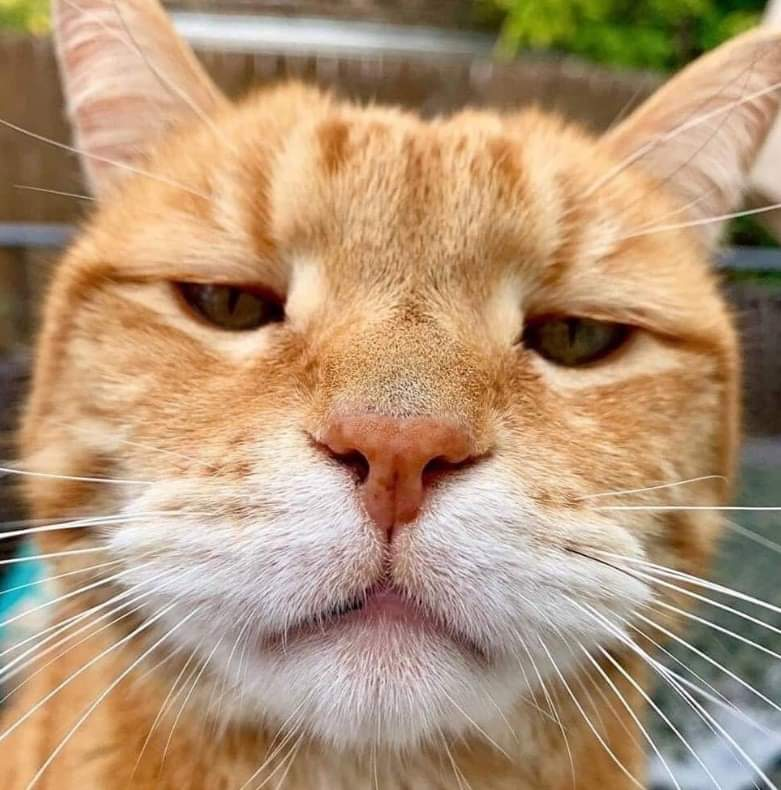

ngjin được dịch chuyển về Chợ Đen cùng một cột sáng chói lòa. Đây có lẽ là raid mệt mỏi nhất mà cậu từng trải qua. ‘Không thể tin được là mình đã phải giết cùng một con boss đến 3 lần…’ Sungjin kiếm một chỗ trong quán First Drop của Xiu Ran. Thế rồi, Người Điều Hành lên tiếng [Chúc mừng. Đối với tất cả các Thợ Săn đã vượt qua màn raid 10 người tại Hang Xích Long] Sungjin đứng lên và nhìn vào Khối Lập Phương. [Raid tiếp theo sẽ đến vào 2 ngày tới. Xin hãy nghỉ ngơi hôm nay và vào ngày mai để tái tạo năng lượng cho bản thân.] ‘Ah… đúng rồi.’ Vẫn còn 2 ngày nghỉ nữa trước khi raid tiếp theo xuất hiện. Trong kiếp trước, Sungjin gần như mất trí trong việc cố gắng sống và không để ý mấy đến những chuyện như này, nhưng giờ nghĩ lại thì cậu ta vẫn còn nhớ đến chúng. Xiu Ran bước đến chỗ mà Sungjin đang ngôi. “Tôi có thể lấy cho ngài thứ gì ạ, thưa ngài Thợ Săn?” Cậu băn khoăn một lúc về các lựa chọn của mình. Mới đây thôi, Sungjin vẫn còn đổ mồ hôi đầm đìa sau nhiệt độ đến từ những dồng dung nham chảy cuồn cuộn trên trong núi lửa. Hai má của cậu vẫn còn nóng rát. Thế là Sungjin hỏi cô ta “Cô có Cola không?” “Vâng, chúng tôi có.” “Vậy một li Cola
ungjin được dịch chuyển về Chợ Đen cùng một cột sáng chói lòa. Đây có lẽ là raid mệt mỏi nhất mà cậu từng trải qua. ‘Không thể tin được là mình đã phải giết cùng một con boss đến 3 lần…’ Sungjin kiếm một chỗ trong quán First Drop của Xiu Ran. Thế rồi, Người Điều Hành lên tiếng [Chúc mừng. Đối với tất cả các Thợ Săn đã vượt qua màn raid 10 người tại Hang Xích Long] Sungjin đứng lên và nhìn vào Khối Lập Phương. [Raid tiếp theo sẽ đến vào 2 ngày tới. Xin hãy nghỉ ngơi hôm nay và vào ngày mai để tái tạo năng lượng cho bản thân.] ‘Ah… đúng rồi.’ Vẫn còn 2 ngày nghỉ nữa trước khi raid tiếp theo xuất hiện. Trong kiếp trước, Sungjin gần như mất trí trong việc cố gắng sống và không để ý mấy đến những chuyện như này, nhưng giờ nghĩ lại thì cậu ta vẫn còn nhớ đến chúng. Xiu Ran bước đến chỗ mà Sungjin đang ngôi. “Tôi có thể lấy cho ngài thứ gì ạ, thưa ngài Thợ Săn?” Cậu băn khoăn một lúc về các lựa chọn của mình. Mới đây thôi, Sungjin vẫn còn đổ mồ hôi đầm đìa sau nhiệt độ đến từ những dồng dung nham chảy cuồn cuộn trên trong núi lửa. Hai má của cậu vẫn còn nóng rát. Thế là Sungjin hỏi cô ta “Cô có Cola không?” “Vâng, chúng tôi có.” “Vậy một li Cola. Cùng với thật nhiều đá.” “Vâng, có ngay đây.” Xiu Ran ngay sau đó mang đến một li Cola với hơn phân nửa là đá lạnh bên trong. Sungjin uống lấy uống để li nước. “Haa… tốt hơn rồi.” Có được một li nước lanh gần như thổi bay đi toàn bộ sức nóng và sự mệt mỏi trong cậu. Sungjin để li nước sang kế bên, rồi cậu bắt đầu kiểm tra số vật phẩm mà mình có được ở vòng này. “Người Điều Hành, đưa toàn bộ số vật phẩm tôi có ở vòng này ra đây… ngoại chứ Quả Tiến Hóa và Đá Cường Hóa.” Người Điều Hành nhanh chóng nhả ra số vật phẩm kia thành một đống chất chồng. Sungjin nhìn qua chúng và nhận ra “Oh đúng rồi… vẫn còn đó…. vài thứ nữa.” Cậu vẫn còn Tim Rồng và “Mu – Chiếc Bút Của Lời Hồi Đáp”.Sungjin không kịp xem qua quả tim do gặp phải Ariane, và cây bút thì do bận cứu Serin khỏi đám troll. Sungjin nhặt hai món đồ lên khỏi đống hổ lốn kia và đặt chúng ra hai bên khác nhau trên bàn. Thứ đầu tiên cậu cầm lên là Tim Rồng. Nó có vẻ ngoài giống như một cục đá đen, nhưng bề mặt lại rất nhẵn nhụi. Sungjin cầm nó lên, và Người Điều Hành nhanh chóng bật bảng thông tin. Tim Rồng – Nguồn Cội Của Mana Nguyên Liệu Chế Tạo Huyền Thoại Trái tim là thứ cung cấp cho loài Rồng nguồn mana khổng lồ; đây là thứ cực kì giá trị, được xem là khoáng sản cấp bậc cao nhất. Chỉ có vài thợ rèn trên thế giới có thể xử lí được thứ nguyên liệu này. Khi đọc đến đây, Sungjin ngay lập tức nghĩ đến Kargos. “Vài người thợ rèn hay không có đi nữa, ông ta cũng là thợ rèn duy nhất ở Chợ Đen này…” Sungjin đặt nó lại vào Khối Lập Phương. Thứ duy nhất còn đó là cây pút. Ariane đã đưa cho cậu cây bút này cùng với câu nói “Dùng thứ này. Ta không biết liệu nó có thể cho ngươi manh mối hay không.” Tiếp theo đó là “Chuyện vừa nãy vui thật đấy, Nhân loại. Ta hi vọng sự hiện diện của mình có thể giúp ngươi thoát khỏi số phận bi thảm.” Sungjin nhặt cây bút lên rồi lầm bầm “Vâng, có ngay đây.” Xiu Ran ngay sau đó mang đến một li Cola với hơn phân nửa là đá lạnh bên trong. Sungjin uống lấy uống để li nước. “Haa… tốt hơn rồi.” Có được một li nước lanh gần như thổi bay đi toàn bộ sức nóng và sự mệt mỏi trong cậu. Sungjin để li nước sang kế bên, rồi cậu bắt đầu kiểm tra số vật phẩm mà mình có được ở vòng này. “Người Điều Hành, đưa toàn bộ số vật phẩm tôi có ở vòng này ra đây… ngoại chứ Quả Tiến Hóa và Đá Cường Hóa.” Người Điều Hành nhanh chóng nhả ra số vật phẩm kia thành một đống chất chồng. Sungjin nhìn qua chúng và nhận ra “Oh đúng rồi… vẫn còn đó…. vài thứ nữa.” Cậu vẫn còn Tim Rồng và “Mu – Chiếc Bút Của Lời Hồi Đáp”.Sungjin không kịp xem qua quả tim do gặp phải Ariane, và cây bút thì do bận cứu Serin khỏi đám troll. Sungjin nhặt hai món đồ lên khỏi đống hổ lốn kia và đặt chúng ra hai bên khác nhau trên bàn. Thứ đầu tiên cậu cầm lên là Tim Rồng. Nó có vẻ ngoài giống như một cục đá đen, nhưng bề mặt lại rất nhẵn nhụi. Sungjin cầm nó lên, và Người Điều Hành nhanh chóng bật bảng thông tin. Tim Rồng – Nguồn Cội Của Mana Nguyên Liệu Chế Tạo Huyền Thoại Trái tim là thứ cung cấp cho loài Rồng nguồn mana khổng lồ; đây là thứ cực kì giá trị, được xem là khoáng sản cấp bậc cao nhất. Chỉ có vài thợ rèn trên thế giới có thể xử lí được thứ nguyên liệu này. Khi đọc đến đây, Sungjin ngay lập tức nghĩ đến Kargos.